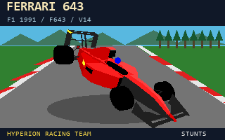

☀
HYPERION RACING TEAM · HOMOLOGATION 7/7
Ferrari 643 F1-91
Rapport d’homologation F643 · Prototype extrême · 11/11/2026
Fiche technique synthétique
TOPSTUNTS · tour moteur105,55 s
V-Max tour190,7 mph
Moyenne sur circuit118,5 mph
Freinage · circuit15,45 s
Glisse · circuit1,60 s
Temps en l’air5,35 s
Sauts détectés6
Pic latéral cinématique208,74 g
V-Max banc331,0 km/h
0–100 km/h2,16 s
Puissance estimée1 468 ch
Freinage 100–026,5 m
7 épreuves effectuées · 0 objectif(s) non atteint(s). Un objectif non atteint ne constitue pas un échec du parcours.
Résultats détaillés
| N° | Protocole | Résultats | Statut |
|---|---|---|---|
| 01 | Banc de puissance | Couple max 889 Nm (est.) à 10 368 RPM · 1 468 ch (est.) à 12 671 RPM | MESURÉ |
| 02 | 0–60–0 mph | Accélération : 2,10 s · freinage : 24,71 m (0,3959 tiles) · distance totale : 51,86 m | MESURÉ |
| 03 | 0–100–0 mph | Accélération : 3,95 s · freinage : 68,11 m (1,0912 tiles) · distance totale : 162,17 m | MESURÉ |
| 04 | 0–100–0 km/h | Accélération : 2,20 s · freinage : 26,50 m (0,4245 tiles) · distance totale : 55,67 m | MESURÉ |
| 05 | 0–200–0 km/h | Accélération : 5,60 s · freinage : 104,52 m (1,6743 tiles) · distance totale : 279,86 m | MESURÉ |
| 06 | V-Max | Vitesse max observée : 205,68 mph · 331,01 km/h · LIMITEUR | MESURÉ |
| 07 | 🏁 TOPSTUNTS · tour autonome Restunts | Tour authentique TOPSTNT.TRK : 105,55 s · 190,7 mph max · replay LF643001.RPL · 1 tentative(s) validée(s) · moyenne 118,5 mph · glisse 1,60 s · sauts 5,35 s | MESURÉ |
Méthodologie
- Les six essais banc/route sont des estimations du modèle CAR*.RES ; le tour TOPSTUNTS est un replay autonome vérifié par Restunts (moteur de Stunts). Ces deux méthodes ne sont pas interchangeables.
- Freinage, glisse et phases en l’air proviennent de l’analyse du BNI, seulement si présent. Le pic en g est une estimation cinématique, et non une mesure d’adhérence des pneus. Les durées élevées ne signifient pas automatiquement meilleure tenue de route.
- Chronos exprimés en ticks de 0,05 seconde ; 1 tile = 62,42304 m.
- Valeurs de puissance et de couple physiques estimées. Les seuils impossibles restent NON ATTEINT.
- La catégorie est déduite automatiquement des mesures de V-Max et de 0–100 km/h, à titre indicatif.
Downloads & THE STUNG video

Download Ferrari 643 V14 · Watch THE STUNG on YouTube ↗ · Download source benchmark replay
Source note: the summary gives 0–100 km/h as 2.16 s; detailed protocol 04 gives 2.20 s. Both original values are preserved. The 105.55 s autonomous Restunts benchmark is distinct from the presented YouTube video.